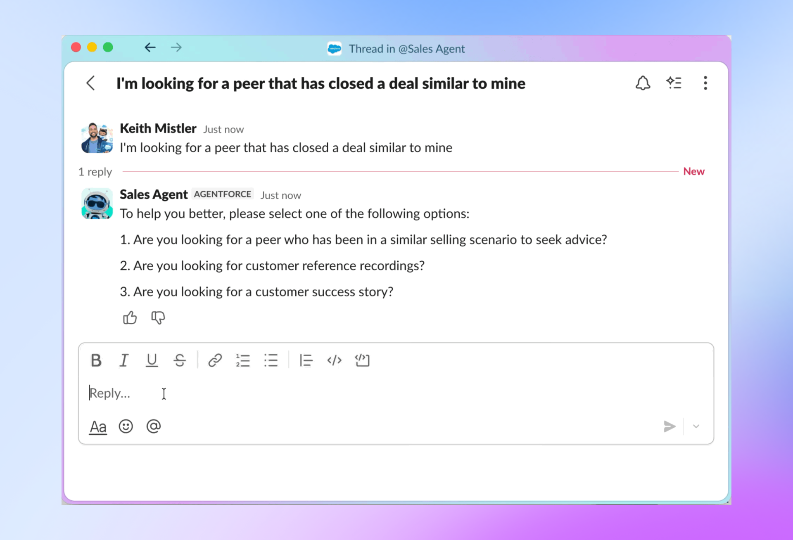
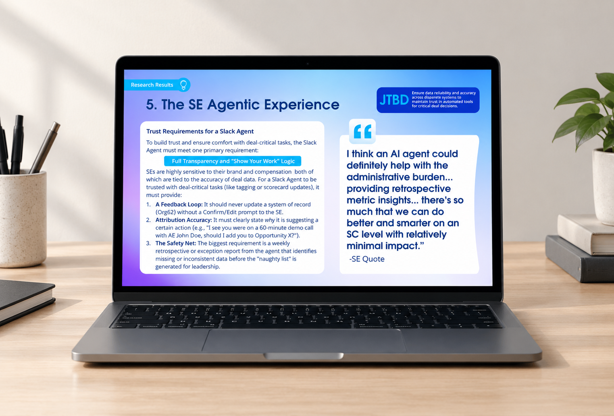

Featured Projects
A selection of strategic design work across product, research, AI, and experience design

From Fragmented Assets to $100M Impact
Architecting Salesforce's #2 SE Platform
Unlocked over $100M in new revenue and streamlined daily workflows for thousands of sales engineers by re-architecting Salesforce's #2 internal platform. Simplified complex, fragmented assets into an intuitive system built for speed and deal execution.

Building an Expert Agent That Eliminates Search Friction
Designing the Phone a Friend Agent
Cut search friction to zero and accelerated sales response times by designing an AI agent that matches sales teams with domain experts in real time. Replaced manual, time-consuming searches with instant, direct routing.

Account Planning Research That Reshaped Salesforce's FY27 Roadmap
Building an AI Powered UX Research Plan
Maximized AI tool adoption and planning velocity by pinpointing the exact factors required for sales teams to trust automated recommendations. Translated deep qualitative research into design strategy that turned ignored suggestions into actionable guidance.
Securing a Multi-Million Dollar Sales Win
Building the Future Vision for a Major Hotel Enterprise
Secured a multi-million dollar enterprise contract with Wyndham Hotels & Resorts by designing and delivering a winning solution pitch. Proved the direct business ROI of user experience design by transforming client proposals into signed deals.

Empowering Next-Gen Creatives
Building a Student-Run Creative Studio
I led the creative direction for a course where students actually teach each other. The goal was to build real leaders and create a system where learning comes from peers. It stuck because it was genuine.